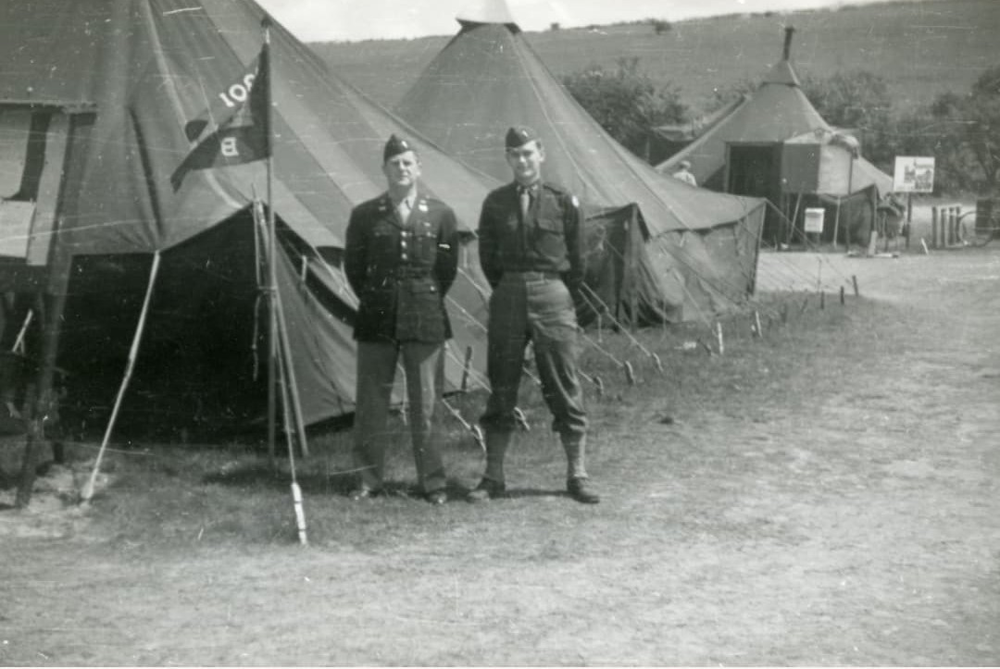
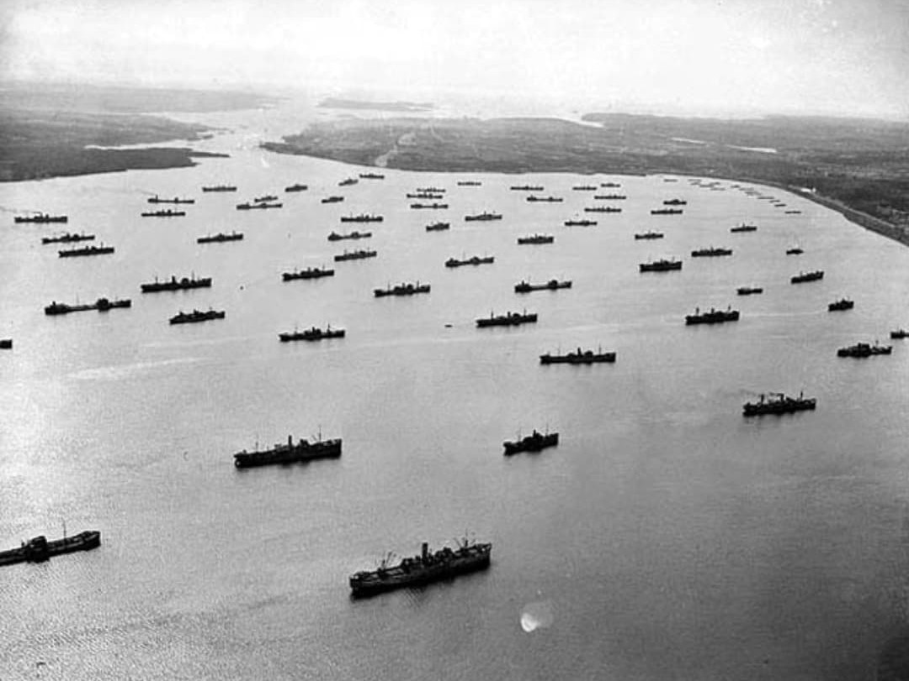
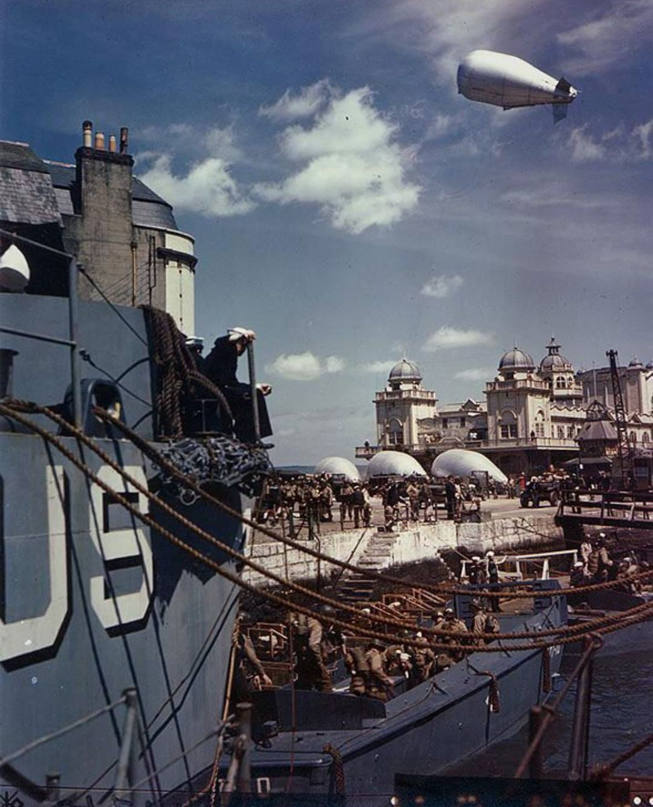

L’Opération Boléro désigne le gigantesque effort logistique mené par les États-Unis et le Royaume-Uni pour préparer le Débarquement en Normandie. Dès 1942, les Alliés décident de transformer la Grande-Bretagne en véritable base de lancement pour une future invasion de l’Europe occupée.
Boléro n’est pas une bataille, mais une opération de préparation à long terme. Elle consiste à accueillir des centaines de milliers de soldats américains, à construire et agrandir des bases aériennes, à réaménager des ports, et à stocker des quantités colossales de matériel militaire. Sans Boléro, l’Opération Overlord n’aurait pas disposé des moyens nécessaires.

Après l’entrée en guerre des États-Unis en décembre 1941, les Alliés doivent décider où concentrer leurs efforts. La stratégie retenue est de frapper l’Allemagne par l’Ouest en ouvrant un front en France. Pour cela, il faut d’abord disposer d’une base sûre, proche du continent, capable d’accueillir des troupes et du matériel en masse : la Grande-Bretagne.
Boléro répond à cette nécessité. L’opération prépare le terrain pour les futures campagnes en Europe, en particulier Overlord, mais aussi les opérations aériennes contre l’Allemagne et le soutien logistique aux forces terrestres.
Les objectifs principaux de Boléro sont :
– Installer et agrandir des bases aériennes pour les bombardiers et les avions de transport
– Réaménager des ports pour accueillir les navires de transport de troupes et de matériel
– Créer des dépôts de carburant, de munitions et de vivres
– Organiser l’arrivée, le stationnement et l’entraînement des troupes américaines
– Mettre en place les infrastructures nécessaires à l’Opération Overlord
1942 – 1944
À partir de 1942, les premiers contingents américains arrivent en Grande-Bretagne. Les ports, les voies ferrées et les routes sont utilisés au maximum de leurs capacités pour acheminer hommes et matériel. Des chantiers de construction se multiplient pour créer des aérodromes, des camps et des dépôts.
Les troupes américaines s’installent dans des régions entières, notamment dans le sud de l’Angleterre, où elles s’entraînent en vue des opérations futures. Boléro coordonne ces mouvements et veille à ce que chaque unité dispose de ce dont elle a besoin pour être opérationnelle le jour venu.

– Plus d’un million de soldats américains stationnés en Grande-Bretagne
– Des millions de tonnes de matériel acheminées (véhicules, chars, munitions, carburant)
– Des dizaines de bases aériennes et navales créées ou agrandies
– Des ports réaménagés pour accueillir les navires de transport et de débarquement
Boléro prépare directement l’Opération Overlord. Les divisions américaines qui débarqueront en Normandie sont stationnées et entraînées en Grande-Bretagne grâce à cette opération. Les bases aériennes servent aux bombardiers qui appuient le Débarquement, et les ports réaménagés permettent de lancer les navires vers les plages françaises.
En ce sens, Boléro est la face cachée du Débarquement : une préparation longue, complexe et souvent invisible, mais absolument indispensable à la réussite de l’invasion.
L’Opération Boléro est l’une des plus grandes opérations logistiques de l’histoire militaire. Elle montre que la victoire ne repose pas seulement sur les combats, mais aussi sur la capacité à organiser, transporter et soutenir des forces gigantesques sur un théâtre d’opérations lointain.
Sans Boléro, l’Opération Overlord n’aurait pas disposé des moyens humains et matériels nécessaires. Boléro marque également le début de la présence américaine massive en Europe, qui se prolongera jusqu’à la fin de la guerre et au-delà.